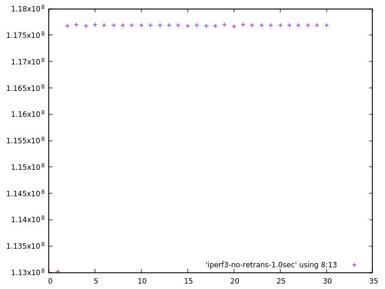
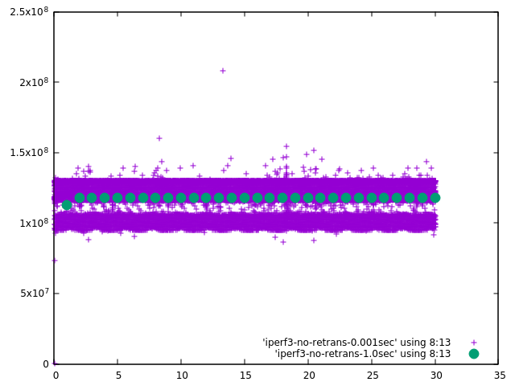
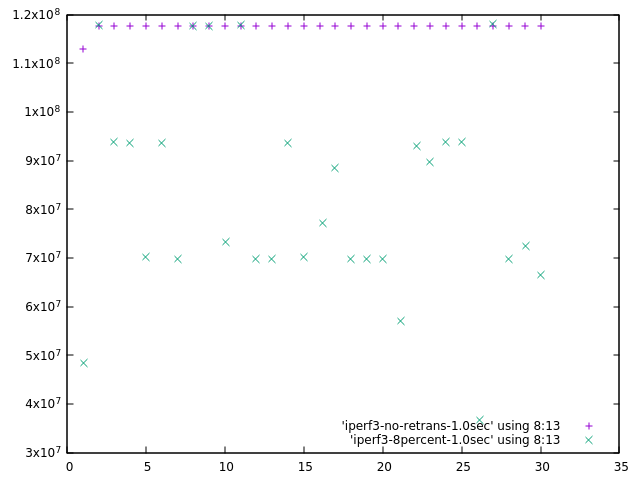
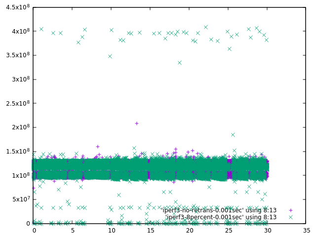
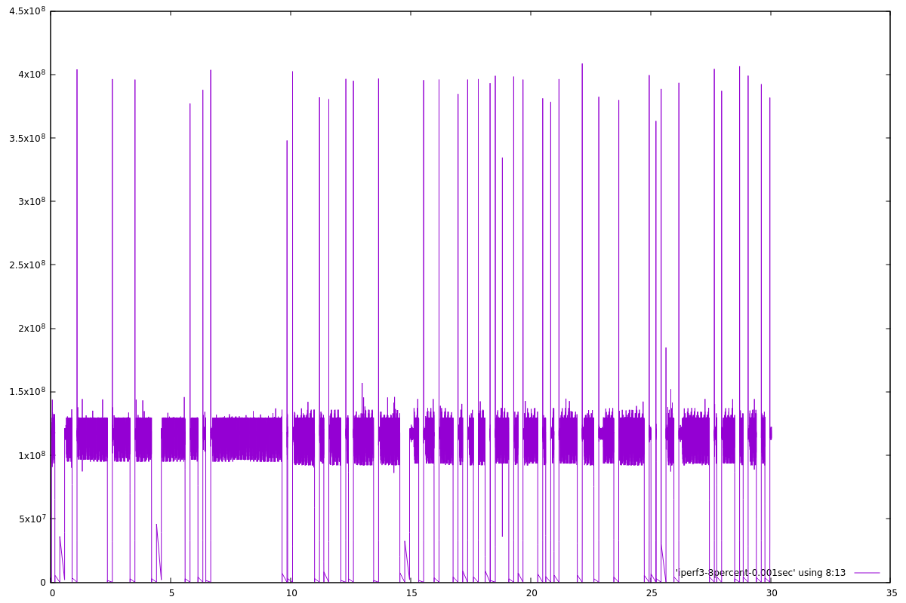

This script generates a throughput per time-unit for a TCP stream. It is something suitable for graphing. It is different from the stream_throughput.sh script with generates the average throughput for all streams in a trace file. A low average will not tell you if the throughput is uniformly low or high with periods of low.
The OUTPUT is a file with 1 line for unit of time resolution (0.001, 0.01, 0.1, or 1 sec) of the trace with the format
(Ending-ACK - Beginning-ACK) / (Ending-time - Beginning-time) = Throughput
Where
the Ending-ACK and Ending-time on line X-1 are the Beginning-ACK -time on line X. The throughput is always per second, not per time resolution unit.
Note that the times are not exactly at the indicated time resolution. They will be the "next" segment after the time resolution tick.
To plot the results use the gnuplot command
plot "OUTPUT-FILE" using 8:13
This will graph the throughput (column 13) versus the Ending-time (column 8)
Usage:
throughput-per-sec.sh FILE-NAME TCP-STREAM-NUMBER IP-DST RESOLUTION OUT-FILE-NAME
FILE-NAME
The file name (or path to the file), This file must be readable by tshark.
TCP-STREAM-NUMBER
Is the TCP Stream number assigned by tshark to the TCP connection you are interested in
IP-DST
Is the IP address of the host receiving the bytes you wish to calculate the throughput for.
RESOLUTION
Is the time resolution 1, 10, 100, 1000 for 1, 1/10, 1/100, or 1/1000 of a second
OUT-FILE-NAME
A file to put the results in.
Examples
Example 1 - 1 second resolution.
Note that the end time (3th numeric column, 8th column overall) is not quite at 1 second intervals because it depends on the time of the ACK packet
$ ./throughput-per-sec.sh iperf3-no-retrans.pcap 1 172.16.1.200 1 iperf3-no-retrans-1.0sec $ head -5 iperf3-no-retrans-1.0sec ; echo . . . . . . . .; tail -5 iperf3-no-retrans-1.0sec ( 113026574 - 0 ) / ( 1.000090 - 0.000000 ) = 113016402.523773 ( 230705534 - 113026574 ) / ( 2.000158 - 1.000090 ) = 117670958.374831 ( 348388838 - 230705534 ) / ( 3.000033 - 2.000158 ) = 117698016.252031 ( 466063454 - 348388838 ) / ( 4.000061 - 3.000033 ) = 117671321.203006 ( 583772822 - 466063454 ) / ( 5.000178 - 4.000061 ) = 117695597.615079 . . . . . . . . ( 3055104830 - 2937441798 ) / ( 26.000027 - 25.000204 ) = 117683862.043582 ( 3172796822 - 3055104830 ) / ( 27.000106 - 26.000027 ) = 117682695.067090 ( 3290488814 - 3172796822 ) / ( 28.000183 - 27.000106 ) = 117682930.414358 ( 3408151846 - 3290488814 ) / ( 29.000004 - 28.000183 ) = 117684097.453444 ( 3525845286 - 3408151846 ) / ( 30.000089 - 29.000004 ) = 117683436.907863 |
Example 2 - graphing the data at 1 second resolution
Note the one low value at the start of the plot, other than that the graph is pretty flat
$ ./throughput-per-sec.sh iperf3-no-retrans.pcap 1 172.16.1.200 1 iperf3-no-retrans-1.0sec $ gnuplot -p -e "set key bottom right; plot 'iperf3-no-retrans-1.0sec' using 8:13"  |
Example 3 - graphing the data at 1 and 0.001 second resolutions
The throughput per second at a resolution of 0.001 seconds varies considerably more than the 1 second resolution. I have doubled the size of the 1 second data points to help them stand out (circles). I also plot them second so they are not covered by the more numerous (1000 times) 0.001 second data points. You can still see the lower throughput of the first 1 second data point but it is still higher that the initial values at 0.001 second.
$ ./throughput-per-sec.sh iperf3-no-retrans.pcap 1 172.16.1.200 1 iperf3-no-retrans-1.0sec $ ./throughput-per-sec.sh iperf3-no-retrans.pcap 1 172.16.1.200 1000 iperf3-no-retrans-0.001sec $ gnuplot -p -e "set key bottom right; plot 'iperf3-no-retrans-0.001sec' using 8:13, 'iperf3-no-retrans-1.0sec' using 8:13 ps 2 pt 7"  |
Example 4 - Comparing throughput from a trace with no retransmissions and 8% retransmissions at 1 second resolution
There are a couple of instances where throughput is the same in both plots but you can see that the majority of data points from the "8percent" graph are noticeably lower and some are very low.
$ ./throughput-per-sec.sh iperf3-no-retrans.pcap 1 172.16.1.200 1 iperf3-no-retrans-1.0sec $ ./throughput-per-sec.sh iperf3-8percent-retrans-no-sack.pcap 1 172.16.1.200 1 iperf3-8percent-1.0sec $ gnuplot -p -e "set key bottom right; plot 'iperf3-no-retrans-1.0sec' using 8:13, 'iperf3-8percent-1.0sec' using 8:13"  |
Example 5 - Comparing throughput from a trace with no retransmissions and 8% retransmissions at 0.001 second resolution
At 0.001 second resolution something interesting happens. You can see that the 8percent graph has some data points that are significantly higher than any of the no-retransmission data points. This is an artifact of calculating throughput based on the ACK value. When a packet has been dropped the ACK value does not change until the segment with the missing data is retransmitted, but new data can be sent. When the missing data is finally received the ACK value is based on all the data received, the throughput value is artificially high since it includes data sent in previous time ticks. Larger time resolutions smooth this effect out by reducing the chance that data sent in time tick X-1 is not ACKed until time tick X. You can also see data points that are 0 or at least very close to zero. This can be due to new data that is being sent but the ACK doesn't change and when nothing is sent because the system is waiting for a retransmission timeout.
$ ./throughput-per-sec.sh iperf3-no-retrans.pcap 1 172.16.1.200 1 iperf3-no-retrans-0.001sec $ ./throughput-per-sec.sh iperf3-8percent-retrans-no-sack.pcap 1 172.16.1.200 1 iperf3-8percent-0.001sec $ gnuplot -p -e "set key bottom right; plot 'iperf3-no-retrans-0.001sec' using 8:13, 'iperf3-8percent-0.001sec' using 8:13"  |
Example 6 - graphing the data, doubling the window size and using a line instead of points
This example looks at the 8percent at 0.001 second data using a line graph instead of just ploting the data points. It makes the periods of very low throughput followed by a spike of higher than average throughput obvious. It also doubles the size of the graph from 600 by 400 to 1200 by 800.
$ ./throughput-per-sec.sh iperf3-8percent.pcap 1 172.16.1.200 1000 iperf3-8percent-0.001sec $ gnuplot -p -e "set key bottom right; set term qt size 1200, 800; plot 'iperf3-8percent-0.001sec' using 8:13 with line"  |
Example 7 - How much time was spent with a throughput of less than 1 MBytes/sev
This calculates the number of seconds when the 8percent transmission has a throughput of less then 1 MB/s when measured at 0.001 second resolution and compares it to the no-retransmission data. 8.6 seconds in the former versus 0.04 in the latter. Only the first 3 and last 5 entries are printed to save space. However in the case of the no-retransmission data there is only 1 entry so all the rows are printed twice.
$ (echo Throughtput Ending - Beginning = Amount Running; echo - Time - Time = of_Time Total; awk '($13 < 1000000) {n=n+$8-$10;
print $13 " " $8 " - " $10 " = " $8-$10 " " n}' iperf3-8percent-0.001sec) | column -t > foo;
$ head -5 foo ; echo . . . . . . . . . . .; tail -5 foo
Throughtput Ending - Beginning = Amount Running
- Time - Time = of_Time Total
110045.203415 0.039820 - 0.000000 = 0.03982 0.03982
0.000000 0.180125 - 0.179107 = 0.001018 0.040838
0.000000 0.181130 - 0.180125 = 0.001005 0.041843
. . . . . . . . . . .
0.000000 29.414233 - 29.413230 = 0.001003 8.20342
35725.211933 29.617667 - 29.415009 = 0.202658 8.40608
0.000000 29.769211 - 29.768210 = 0.001001 8.40708
0.000000 29.770212 - 29.769211 = 0.001001 8.40808
35727.151154 29.973672 - 29.771025 = 0.202647 8.61073
$ (echo Throughtput Ending - Beginning = Amount Running; echo - Time - Time = of_Time Total; awk '($13 < 1000000) {n=n+$8-$10;
print $13 " " $8 " - " $10 " = " $8-$10 " " n}' iperf3-no-retrans-0.001sec) | column -t > foo;
$ head -5 foo ; echo . . . . . . . . . . .; tail -5 foo
Throughtput Ending - Beginning = Amount Running
- Time - Time = of_Time Total
110818.876132 0.039542 - 0.000000 = 0.039542 0.039542
. . . . . . . . . . .
Throughtput Ending - Beginning = Amount Running
- Time - Time = of_Time Total
110818.876132 0.039542 - 0.000000 = 0.039542 0.039542
|